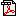

Rhizomer
Rhizomer is a web application that facilitates publishing and also exploration of Semantic Web data (and particularly Linked Data).
With Rhizomer, lay users can explore datasets performing the 3 basic data analysis tasks proposed by Shneiderman:
- Overview: get the full picture of the data set at hand.
Rhizomer applies the Global Navigation interaction pattern implemented as navigation bars (at the top), automatically generated from the ontologies and taxonomies structuring the dataset.
- Zoom & Filter: zoom in on items of interest and filter out uninteresting items.
The choice in this case is Faceted Navigation. Once we have zoomed by selecting the kind of things we are interested in from the navigation bar, facets help users filter out those that are not interesting. Facets are also generated automatically.
- Details: after zooming and filtering the user arrives to the concrete resources of interest.
At this point, the user can get the details for those resources. This is implemented as a list of properties and values plus plugable specific visualisations tailored to the kind of resource at hand, e.g. a map for geo-located resources.
Download
A preliminary version of Rhizomer is available for download. Please, treat it with care because it is very preliminary ;-)
Architecture

Click on the image to enlarge it, or alternatively there is a poster about the Rhizomer architecture.
For more details, there are some publications and presentations about Rhizomer available online.